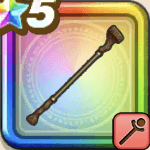

マグマのつえ
攻略班 5.5点 / メラミイオラ改マグマ
くわしい特徴
【レベル別習得スキル】 Lv1メラミ（消費MP：9）複数の火の玉で敵1体にメラ属性の呪文中ダメージを与える Lv10イオラ改（消費MP：25）より大きな爆発で敵全体にイオ属性の呪文中ダメージを与える Lv20マグマ（消費MP：25）敵1体にギラ属性の呪文特大ダメージを与える Lv40さいだいHP+10 Lv45さいだいMP+8 Lv50守備力+4 【限界突破スキル】 1凸マグマのダメージ+5% 2凸マグマのダメージ+5% 3凸マグマのダメージ+5% 4凸マグマのダメージ+5%